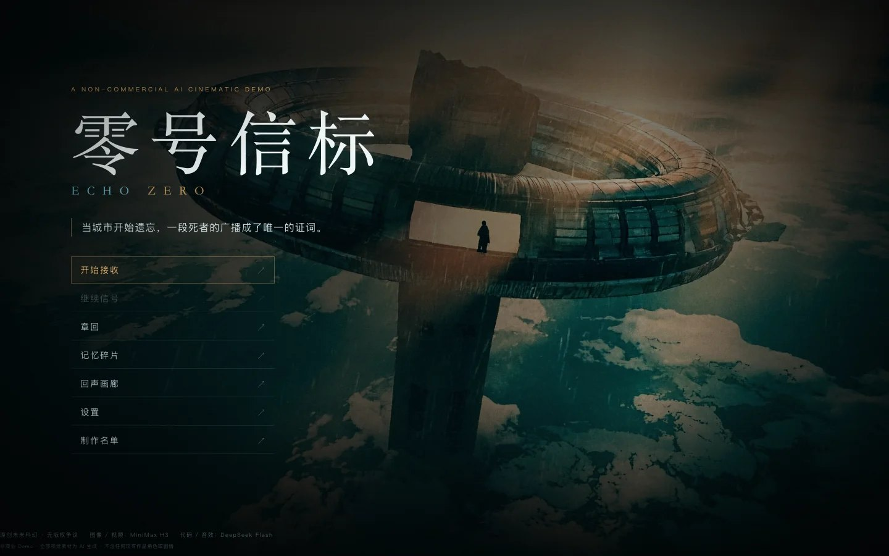

零号信标 ECHO ZERO / 蓝光游戏
A future-noir visual novel about memory, signal and a city that forgets. Three branching chapters, a gallery and an ending loop — built as a complete narrative surface, not a scene demo.
- Generated scenes, character art, video and Chinese voice; code, UI and sound design by DeepSeek Flash.
- Save / load, chapter select, gallery, settings and mobile layout.
- Static GitHub Pages build; no backend and no runtime API keys.
- Format
- 3 chapters · branching choices
- Media
- MiniMax H3 + Edge TTS + WebAudio
- Build
- Static single-page app
- Status
- Live, non-commercial
- Model
- DeepSeek Flash + MiniMax H3
- Leverage
- Code, UI, audio · MiniMax art/video/music · additional Chinese voice (Edge TTS)